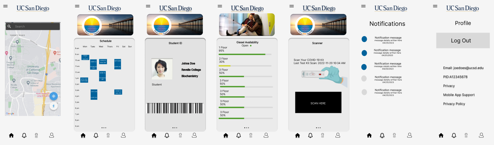

UCSD App ReDesign
Project Overview
This is a personal project that I worked on while I was taking DSGN 1. I was brainstorming ideas for the final project and the UCSD app was one of them Although we did not choose this as our final project. I decided to continue working on it so I can practice the skills that I learned from class.
Problem
There were a few problems that students faced with the app such as there is a lot of scrolling and it is very busy, that it takes for a while for the user to pinpoint where the information they are looking for is at, or students to have not even heard about it


Research
Since this was a side project while working on the final project for DSGN 1 I did not have the opportunity to professionally interview users or students, so I mostly relied on what my close friends thought about the app, my own personal experience and looking on different social platforms such as reddit to see what people have said about the app.
Design
To come up with a redesign, I used the double diamond method. I used wireframes to sketch out the pages of the app. I focused on making it very simple and less scrolling as compared to the original app.
Results
I redesigned the app in a way that is more simple and the user will be able to swipe and select what front page they will want to see. Then on top there are slides with images that show the recent news and events at UCSD. I kept the same color scheme and format of the original app.

Reflection
If I were to actually work on this project and expand it even further I would focus on gaining interviews and feedback from users. I would also focus on the aesthetic of it. As well I create a prototype and test by gaining feedback from the users.